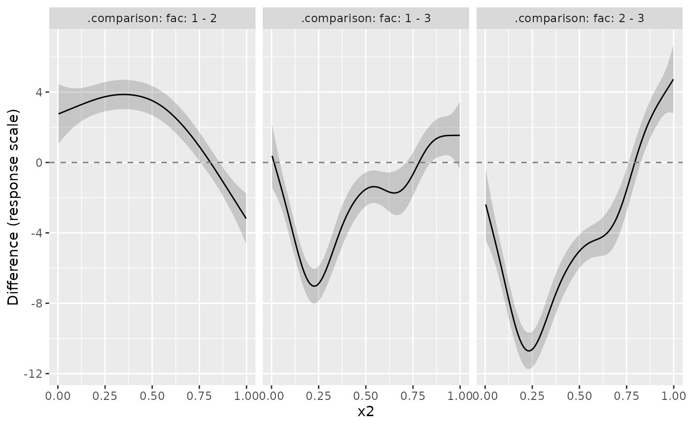

Conditional differences of fitted values from a GAM
Source:R/conditional-differences.R
conditional_differences.RdCompare full fitted values between pairs of factor levels, conditional on
covariate values. Parametric effects and smooths are included unless excluded
explicitly. Unlike difference_smooths(), these are differences of predictions,
rather than differences of selected smooth functions.
Usage
conditional_differences(
model,
by,
condition = NULL,
data = NULL,
scale = c("response", "link", "linear_predictor"),
...
)
# S3 method for class 'gam'
conditional_differences(
model,
by,
condition = NULL,
data = NULL,
scale = c("response", "link", "linear_predictor"),
n_vals = 100,
ci_level = 0.95,
complete = TRUE,
unconditional = FALSE,
uncertainty = c("delta", "simulation"),
n_sim = 10000,
seed = NULL,
n_cores = 1,
method = c("gaussian", "mh", "inla", "user"),
draws = NULL,
mvn_method = c("mvnfast", "mgcv"),
burnin = 1000,
thin = 1,
t_df = 40,
rw_scale = 0.25,
envir = NULL,
...
)Arguments
- model
a fitted GAM object.
- by
character vector naming factors that define comparison groups. For multiple factors, groups are joint combinations of their levels and all pairs of groups are compared. To compare one factor within levels of another, put the latter in
conditioninstead.- condition
character vector or list specifying evaluation covariates, as in
conditional_values(). The first non-comparison covariate supplies the plotting axis. Up to four non-comparison conditions are supported. Named elements for factors inbyrestrict their comparison levels, e.g.list("x", treatment = c("control", "high")). Other covariates are held attypical_values(). At least one non-comparison condition is required.- data
optional data frame used to generate condition values and determine covariate classes. Explicit values in
conditiontake precedence. Other covariates use the fitted model's typical values. The rows ofdataare not used directly as a prediction grid.- scale
character; which scale should predictions be returned on?
- ...
arguments passed to prediction, such as
exclude. Argumentstype,newdata,se.fit, andtermsare not supported here.- n_vals
numeric; number of values to generate for numeric variables named in
condition.- ci_level
numeric; a number on interval (0,1) giving the coverage for credible intervals.
- complete
logical; include all combinations of comparison and conditioning factors? With
FALSE, retain only combinations observed in the fitted data, and compare groups only within shared conditioning strata. This does not restrict numeric grids to overlapping observed ranges.- unconditional
logical; include smoothing-parameter uncertainty in the Bayesian covariance, if available, for delta intervals and Gaussian draws. This argument does not modify MH or user-supplied draws.
- uncertainty
character;
"delta"uses analytic link-scale or delta-method response-scale standard errors and normal intervals."simulation"uses shared posterior coefficient draws and equal-tailed quantiles of the resulting differences.- n_sim
integer; number of posterior draws for simulation uncertainty. Ignored for
method = "user", which uses all supplied draws.- seed
integer or
NULL; seed passed tofitted_samples(). An explicit seed makes simulation reproducible and preserves the caller's RNG state.- n_cores
integer; number of CPU cores to use when generating multivariate normal distributed random values. Only used if
mvn_method = "mvnfast"andmethod = "gaussian".- method
character; posterior sampler used by
fitted_samples()."gaussian"uses the Gaussian posterior approximation;"mh"uses Metropolis-Hastings;"user"uses supplied coefficient draws."inla"is reserved by the sampling machinery but is not implemented.- draws
matrix of posterior coefficient draws, one draw per row in model coefficient order, used with
method = "user". At least two are required.- mvn_method
character; one of
"mvnfast"or"mgcv". The default is usesmvnfast::rmvn(), which can be considerably faster at generate large numbers of MVN random values thanmgcv::rmvn(), but which might not work for some marginal fits, such as those where the covariance matrix is close to singular.- burnin
numeric; the length of any initial burn in period to discard. See
mgcv::gam.mh().- thin
numeric; retain only
thinsamples. Seemgcv::gam.mh().- t_df
numeric; degrees of freedom for static multivariate t proposal. See
mgcv::gam.mh().- rw_scale
numeric; factor by which to scale posterior covariance matrix when generating random walk proposals. See
mgcv::gam.mh().- envir
an optional environment supplying functions and constants used in model expressions. The available model formula environment is used when
NULL. Covariate observations should be supplied indata.
Value
A tibble of class "conditional_differences", with .contrast,
.diff, .se, .lower_ci, .upper_ci, and evaluation covariates.
.se is on the requested scale; for simulation it is the standard deviation
of difference draws. A single comparison factor has .level_1 and
.level_2 columns. Multiple factors have <factor>_1 and <factor>_2
columns. Attributes record by, condition, scale, uncertainty,
ci_level, exclude, and plotting channels.
Details
Differences are group 1 minus group 2, with groups ordered by model factor levels. Both groups use the same values of all other covariates. On the response scale the inverse link is applied to each prediction before subtraction. Shared terms can therefore affect response-scale differences even when they cancel on the link scale.
Intervals are pointwise, not simultaneous across the grid or comparisons.
They describe uncertainty in conditional mean differences, not observation
noise. Simulation uses fitted_samples() once for the entire prediction
grid, retaining dependence between predictions by subtracting within draws.
The estimate is always the difference of fitted predictions; simulation
intervals need not be centred on this estimate. Simulation controls are
ignored when uncertainty = "delta".
exclude sets the named term contributions to zero. In particular, excluding
random effects does not integrate over their distribution. Offsets follow
mgcv::predict.gam() semantics. Supported models are gam and bam fits
with a single linear predictor and an ordinary scalar inverse-link mean
(including negative binomial, Tweedie, beta regression and scaled t families).
Examples
load_mgcv()
df <- data_sim("eg4", seed = 2)
m <- gam(y ~ fac + s(x2, by = fac) + s(x0), data = df, method = "REML")
cd <- conditional_differences(m, by = "fac", condition = "x2")
draw(cd)

# Restrict comparisons and fix a further covariate
conditional_differences(m, by = "fac",
condition = list("x2", fac = c("1", "3"), x0 = 0.5))
#> # A tibble: 100 x 9
#> .contrast .level_1 .level_2 .diff .se .lower_ci .upper_ci x2 x0
#> <int> <fct> <fct> <dbl> <dbl> <dbl> <dbl> <dbl> <dbl>
#> 1 1 1 3 0.375 0.927 -1.44 2.19 0.00325 0.5
#> 2 1 1 3 0.000823 0.834 -1.63 1.63 0.0133 0.5
#> 3 1 1 3 -0.374 0.748 -1.84 1.09 0.0233 0.5
#> 4 1 1 3 -0.752 0.673 -2.07 0.567 0.0334 0.5
#> 5 1 1 3 -1.13 0.612 -2.33 0.0656 0.0434 0.5
#> 6 1 1 3 -1.52 0.566 -2.63 -0.413 0.0535 0.5
#> 7 1 1 3 -1.92 0.536 -2.97 -0.869 0.0635 0.5
#> 8 1 1 3 -2.33 0.518 -3.34 -1.31 0.0736 0.5
#> 9 1 1 3 -2.74 0.509 -3.74 -1.74 0.0836 0.5
#> 10 1 1 3 -3.16 0.505 -4.15 -2.17 0.0937 0.5
#> # i 90 more rows
# Pointwise posterior bands from shared coefficient draws
conditional_differences(m, by = "fac", condition = "x2",
uncertainty = "simulation", n_sim = 1000, seed = 42)
#> # A tibble: 300 x 9
#> .contrast .level_1 .level_2 .diff .se .lower_ci .upper_ci x2 x0
#> <int> <fct> <fct> <dbl> <dbl> <dbl> <dbl> <dbl> <dbl>
#> 1 1 1 2 2.76 0.878 1.05 4.51 0.00325 0.462
#> 2 1 1 2 2.80 0.830 1.15 4.45 0.0133 0.462
#> 3 1 1 2 2.85 0.784 1.29 4.42 0.0233 0.462
#> 4 1 1 2 2.89 0.741 1.43 4.34 0.0334 0.462
#> 5 1 1 2 2.94 0.699 1.55 4.32 0.0434 0.462
#> 6 1 1 2 2.98 0.660 1.67 4.25 0.0535 0.462
#> 7 1 1 2 3.03 0.625 1.81 4.23 0.0635 0.462
#> 8 1 1 2 3.07 0.592 1.93 4.19 0.0736 0.462
#> 9 1 1 2 3.11 0.562 2.01 4.19 0.0836 0.462
#> 10 1 1 2 3.16 0.536 2.10 4.20 0.0937 0.462
#> # i 290 more rows